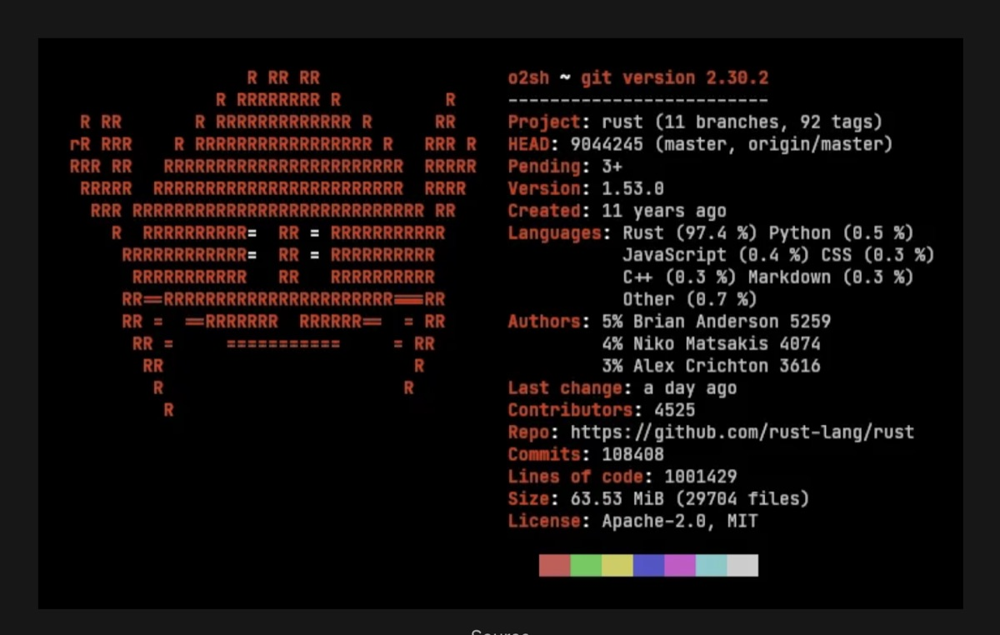

How do I learn Rust? I got you. 🦀
Why Rust, what to learn in order, and three projects to build. All free.

Rust is a programming language built to be fast without the memory bugs that C and C++ are known for. Google's Android team reports 1000x lower memory-safety vulnerability density in Rust than in their C/C++ (Google security blog, Nov 2025). Discord rewrote a service from Go to Rust to get rid of garbage-collector latency spikes (2020).
Why Rust
Read or watch one of these first if you want the case for it.
- Google: Rust in Android. How 1000x fewer memory bugs looks in a real codebase.
- Why Discord switched from Go to Rust. What happened when garbage collection caused latency spikes.
- Rust: a language for the next 40 years. A talk by Carol Nichols, co-author of the Rust Book.
Learn it, in this order
- Rust 101. A 9-minute overview, so the rest makes sense.
- The Rust Book, chapters 1-8. The core of the language, explained properly and for free.
- Rustlings. Small exercises to do alongside the book, so you practise as you read.
- Google's Comprehensive Rust. The course Google uses internally to teach Rust to its engineers.
- Microsoft's RustTraining books. Free books that bridge to Rust if you already know Python, C# or C++.
Then build
Easiest first.
- Your own grepEasy. Search files from the terminal. A command line app in about 15 minutes.
- A multithreaded web serverMedium. The final project of the Rust Book. You handle several requests at once.
- Your own operating systemHard. A free blog series that builds a small OS step by step.
Try it now
Write and run Rust in your browser. No install.